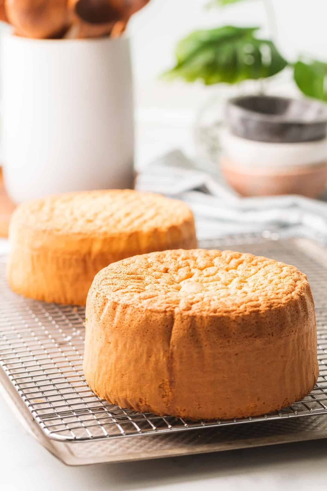

EASY SPONGE CAKE
This easy sponge cake is soft, fluffy, and light as air! It's a simple recipe for basic sponge cake made with ingredients including cake flour, beaten eggs, and sugar for an easy, simple sponge cake that's moist and soft!
Here's what you will need for this recipe:
- cake flour
- water
- vegtable oil
- eggs
- vanilla extract
- baking powder
- salt
- sugar
- and honey.
Method:
- First, beat the egg whites to firm peaks. The tips should fall but the base of the meringue should hold its shape.
- Next, beat the egg yolks, sugar, salt, vanilla, honey, and water together until pale yellow and fluffy. Gradually increase to high speed for best results.
- Combine half the egg whites with the egg yolk mixture and gently fold being careful not to deflate any of the egg whites or egg yolk mixture.
- Sift in the cake flour and baking powder and fold gently. Next add the vegetable oil. Tip: To help incorporate the oil, first mix in a bit of batter with the oil. Then add to the remaining batter.
- Add the remaining half of the egg whites and gently fold together.
- Pour into a six inch cake pan lined with parchment paper and bake at 350 degrees F until a toothpick comes out clean.
click here for the link to this recipe
